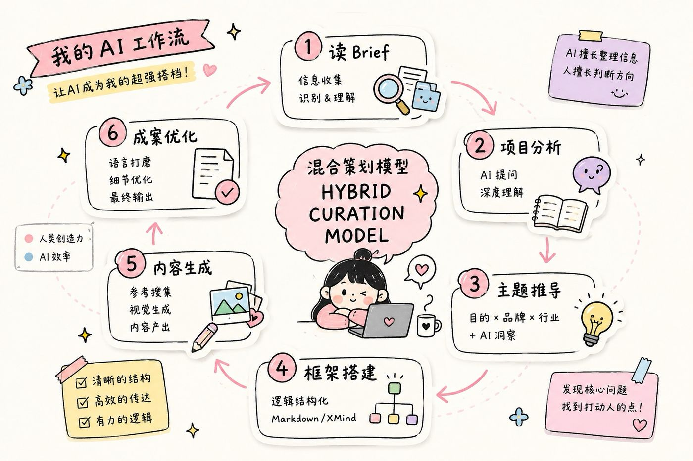

技术思考 · 第 01 篇 / 共 5 篇
AI实操指南（一）：我的 AI 工作流
AI实操指南（一）：我的 AI 工作流
这两年，我越来越频繁地遇到一种情况。
甲方拿着 AI 写好的创意来找我，让我按照他的想法，或者更准确一点说，按照豆包的想法继续写方案。
这种不适感，在我这两年的 OPC 过程中越来越明显。
当然，出于对金钱的尊重，这种项目我大多数还是会接。毕竟工作就是工作，该赚的钱还是要赚。
但站在我自己的信念里，我始终相信，我能做得比 AI 更好。
这种自信来自我的判断，也来自人与人之间共鸣的能力，以及很多无法被语言完整描述的直觉。
你可以说这是人类的傲慢，我接受这个说法。但至少到今天，我还是愿意相信自己的判断。
当然，我也不是完全没有研究 AI。
恰恰相反，这两年我几乎每天都在研究它，也一直在思考，怎么把它真正融入自己的工作。
在我看来，AI 的底层逻辑依然是基于已有文本进行预测和生成。如果你不给它新的信息、新的角度，它其实很难真正跳出已有文本，生成超越当下语料的内容。
但这并不影响它真的很好用，而且是真正意义上的好用。
所以，我不会去讨论 AI 好还是不好，也不会去讨论什么伦理问题。
我更关心的是，怎么把它变成我工作流的一部分。
哪些事情交给 AI，哪些事情必须由人完成，我给自己规划了一套完整的 Skill。
说实话，现在真正需要我亲自参与的创意工作，大概只占整个项目的 30%，而且主要集中在核心创意点的挖掘和最终判断。
也正因为这样，整个项目的效率发生了非常大的变化。
以前，我们整个团队两周才能完成一份方案。
现在，大部分项目，我一个人大概一周左右就能完成，这里面还包含了 3D 效果预览和方案调整的时间。
我的 AI 工作流

第一阶段：读 Brief
拿到 Brief 之后，我不会急着开始分析。
我会先把所有资料整理出来。
包括客户提供的资料、会议纪要、会议录音等等。
像会议录音，我基本都会先用妙记转成逐字稿，然后再把所有资料统一整理给 AI。
但这里，我的方法可能和很多人不一样。
大部分人拿到资料之后，第一句话都是：
“帮我分析一下这个项目。”
我是反着来的。
我会先让 AI 问我几个核心问题。
这些问题通常都是围绕项目本身、品牌、传播目标或者商业目标展开。
我会先按照自己的理解，一个一个回答。
回答完之后，再让 AI 基于我的回答继续延展。
因为在我看来，一个好的问题，比一个标准答案更重要。
这个过程，更像是在和 AI 一起推导，而不是让 AI 帮我完成思考。
当然，这里面我还会不断补充很多信息。
比如我自己对于这个甲方的理解。
比如我读过的一些行业文章。
比如品牌创始人的采访。
甚至有时候，我会直接把一段视频链接发给 AI，让它结合视频内容继续分析。
这些信息，有的是文字，有的是视频。
我会尽可能把我已经知道的信息同步给它。
当然，这里面也有一个风险。
很多人觉得，给 AI 的信息越多越好。
但我的体验恰恰不是这样。
你给它越多预设，它反而越容易沿着你的思路一直走，最后生成出来的内容越来越像是在重复你的观点。
所以，我会不断调整 AI 的个性化设置。
哪些信息只是参考，哪些信息可以影响判断，哪些信息需要被弱化，这些都需要不断去约束。
这其实也是我一直在摸索的一部分。
第二阶段：主题推导
整个项目分析完成之后，我不会马上开始写方案。
我会先把主题想清楚。
这一部分，目前还是以我自己的思考为主。
通常我会从几个方向同时去推。
第一个方向，是目的。
也就是客户到底想做什么。
他真正希望用户感受到什么。
希望传播什么。
希望最后留下什么。
我一般会先用目的论，把这个问题在脑子里彻底想清楚。
第二个方向，是品牌本身。
不同品牌有不同的表达方式。
品牌过去积累了什么，它希望未来走向哪里，它这一次希望强化什么，这些都会影响主题。
第三个方向，是整个行业。
行业最近在发生什么？
竞品在做什么？
有没有新的趋势？
有没有新的表达方式？
这些都会成为主题推导的一部分。
这几个方向基本确定之后，我才会让 AI 参与。
AI 更多承担的是整理、归纳和阐释的工作。
包括帮助我梳理主题逻辑、优化表达、精炼语言。
但主题本身，以及整个主题成立的原因，到目前为止，我还是更愿意自己完成。
当然，现在也有一些能力很强的大模型，在这一块已经做得不错。
只是对我来说，最终决定方向的人，还是我自己。
第三阶段：框架搭建
主题出来之后，整个方案框架基本也就出来了。
以前，这一步其实特别耗时间。
大家总想着怎么写得更巧妙。
会写一个故事。
会设计一个很长的引子。
会用很多出其不意的表达方式。
但现在，这种方式越来越难成立了。
说得现实一点。
很多甲方已经不会因为你前面写了一个特别精彩的故事，就愿意认真把它看完。
这种曾经属于策划的浪漫，现在越来越像时代的眼泪。
所以，我现在基本都会用比较简单、容易理解的逻辑去搭建整个框架。
如果遇到真正愿意一起打磨内容的客户，我还是会陪着一点一点去磨。
但大部分项目，我都会优先保证信息传达效率。
基本上，主题确定之后，我会直接把整个框架写成 Markdown，再转换成 XMind，一口气把整个逻辑树搭建完成。
第四阶段：写内容
这一部分，也是 AI 帮助我最多的地方。
以前，我们整个团队会一起去小红书找设计风格。
找互动体验。
找案例。
找传播口径。
现在，我还是会找。
但整个工作方式已经完全变了。
我会根据每一页的逻辑，针对性去 Pinterest 找视觉参考。
在找参考的同时，我已经开始用 Image 2 去生成对应的效果图。
看到一个互动形式，我会直接让 AI 帮我整理互动逻辑和对应阐释。
很多时候，我甚至是在搜索参考的过程中，内容已经同步开始生产。
所以，现在搜索和生产几乎是同时发生的。
虽然最后还是需要人工审核，但相比以前，这一步已经节省了大量时间。
很多内容，我几乎可以在搜索的过程中直接完成生产。
第五阶段：成案
AI 出现之后，成案速度确实快了很多。
但它也带来了新的问题。
也是我现在最在意的问题。
就是语言。
我真的无法忍受一篇方案里面，到处都是那种一眼就能看出来是 AI 写的文字。
尤其是那些特别工整、特别正确、所有模型都喜欢写的句子。
这种文字，看起来没有问题。
但读起来没有人的痕迹。
所以，成案阶段，我花最多时间的地方，其实不是改内容。
而是改语言。
把那些一眼就是 AI 的表达全部拿掉。
让整篇方案重新回到一个人真正会说的话。
至少到今天，我还是觉得，这一步没有任何模型能够替代。
⬅️ 返回 技术思考 ｜ 下一篇：02 AI与投资——决策系统